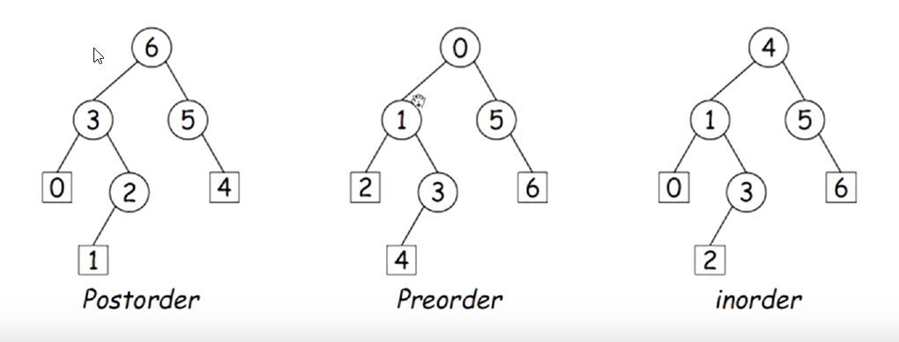

Trees
Trees naturally represent recursively defined, hierarchical objects with more than one recursive sub-part for each instance
Common Examples: expressions, sentences
Trees also describe structures which can be recursively divided into multiple subsets
Formal Definitions
CS 61a Style - A tree consists of a label value and zero or more branches (or children), each of them a tree
CS 61a Style (Alt) - A tree is a set of nodes (or vertices), each of which has a label value and one or more child nodes, such that no node descends (directly or indirectly) from itself. A node is the parent of its children.
Positional Trees - A tree is either empty or consists of a node containing a label value and an indexed sequence of zero or more children, each a positional tree. If every node has two positions, we have a binary tree and the children are its left and right sub-trees.
Tree Characteristics
The root of a tree is a non-empty node with no parent in that tree (its parent might be in some larger three that ocntains that tree as a substree). Thus, every node is the root of a (sub)tree.
The order, arity, or degree of a node is its number (max number) of children
The nodes of a k-ary tree have at most k children
A leaf node has no children (no non-empty children in the case of positional trees)
The height of a node in a tree is the largest distance to a leaf. A leaf has height 0 and the max height of a tree is equal to the height of its root
The depth of a node in a tree is the distance to the root of that tree. The root node has depth 0 and node S where S != R, the depth of R is 1 more than its parent
Traversal
Traversing a tree means enumerating (some subset of) its nodes
Typically done recursively, because that is natural description
As nodes are enumerated, we say that they are visted
Three basic orders for enumeration
Preorder: visit node, traverse its children
Postorder: traverse children, visit node
Inorder: traverse first child, visit node, traverse second child (binary trees only)

General Traversal
void preorderTraverse(Tree<Label> T, Consumer<Tree<Label>> visit) {
if (T != null) {
visit.accept(T);
for (int i = 0; i < T.arity(); i++)
preorderTraverse(T.child(i), visit);
}
}
preorderTraverse(myTree, T -> System.out.print(T.label() + " ")); //Java 8 lambda syntax
Iterative Depth-First Traversal
void preorderTraverse2(Tree<Label> T, Consumer<Tree<Label>> visit) {
Stack<Tree<Label>> work = new Stack<>();
work.push(T);
while (!work.isEmpty()) {
Tree<Label> node = work.pop();
visit.accept(node);
for (int i = node.arity() - 1; i >= 0; i--) {
work.push(node.child(i));
This traversal takes the same time and space as the recursive solution
We have built an explicit stack data structure for Java's built-in execution stack (which handles function calls)
For loop works backwards so that the last node in (left-most) is the first node out
Breadth-first Traversal
Traverse all nodes at depth 0, then depth 1, etc.
change Iterative Depth-first traversal from LIFO to FIFO
void breadthFirstTraverse(Tree<Label> T, Consumer<Tree<Label>> visit) {
ArrayDeque<Tree<Label>> work = new ArrayDeque<>(); //Changed
work.push(T);
while (!work.isEmpty()) {
Tree<Label> node = work.remove(); //Changed
if (node != null) {
visit.accept(node);
for (int i = 0; i < node.arity(); i++) //Changed
work.push(node.child(i));
}
}
}
Recursive Breadth-First Traversal: Iterative Deepening
Previous breadth-first traversal used space proportional to the width of the tree, which is Θ(N) for bushy trees, whereas depth-first traversal takes log N space on bushy trees
Is is possible to get breadth-first traversal in log N space and Θ(N) time on bushy trees?
For each level, k, of the tree from 0 to lev, call doLevel (T, k):
void doLevel(Tree T, int lev) {
if (lev == 0)
visit T
else
for each non-null child, C, of T {
doLevel(C, lev-1);
}
}
So we do breadth-first traversal by repeated (truncated) depth-first traversals: iterative deepening.
In doLevel(T, k), we skip (traverse but don't visit) the nodes before level k, and then visit at level k, but not their children
Times
Tree traversal is linear Θ(N) where N is the # of nodes: Form of the algorithm implies that there is one vist at the root, and then one visit for every edge in the tree. Since every node but the root has exactly one parent, and the root has none, there MUST be N - 1 edges in any non-empty tree.
In a positional tree, there is also one recursive call for each empty tree, but # of empty trees can be no grater than kN where k is arity
For any tree of arity k, h + 1 <= N <= (kh + 1- 1) / (k - 1) where h is the height of the tree
So h ⋲Ω(logk N) = Ω(log N) and ⋲ O(N).
Many tree algorithms look at one child only. For them, the worst-case time is proportional to the height of the tree Θ(log N) (assuming that the tree is bushy (each level has as many nodes as possible)
Iterators for Trees
class PreorderTreeIterator<Label> implements Iterator<Label> {
private Stack<Tree<Label>> s = new Stack<Tree<Label>>();
public PreorderTreeIterator(Tree<Label> T) { s.push(T);
public boolean hasNext() { return !s.isEmpty(); }
public T next() {
Tree<Label> result = s.pop();
for (int i = result.arity()-1; i >= 0; i--)
s.push(result.child(i));
return result.label();
}
}
for (String label : aTree) System.out.println(label + " ");